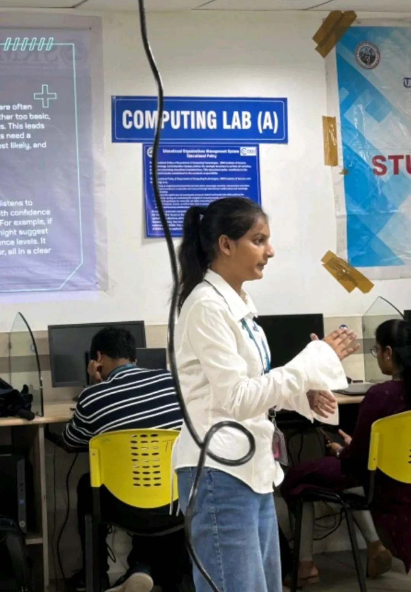

AI ✦ FULL STACK ✦ MACHINE LEARNING ✦ AGENTIC AI ✦ DEVOPS ✦ CLOUD ✦ DATA ✦ RESEARCH ✦ AI ✦ FULL STACK ✦ MACHINE LEARNING ✦ AGENTIC AI ✦ DEVOPS ✦ CLOUD ✦ DATA ✦ RESEARCH ✦
01.5 / PHOTO REEL
LIFE BEYOND THE CODE
IMG TYPE 01 — POLAROID STACK
IMG TYPE 02 — FILM STRIP
IMG TYPE 03 — HOVER REVEAL
IMG TYPE 04 — SCATTER
CURIOUS BY DEFAULT

SOMEWHERE BETWEENCURIOSITY AND OBSESSIONTHINGS GET BUILT.
02 / SELECTED BUILDS
THINGS I SHIPPED.
CASE 01 · COMPUTER VISION × WEB · 2026
POSTURE VISION
An AI workout coach that runs in the browser: it counts reps, checks your form and talks you through every set, and the video never leaves your device.
exercises · categories
16 · 5
synthetic front-view sets counted exactly
0% → 100%
automated tests
150+
REACT · MEDIAPIPE POSE · WEB SPEECH API · K-NN · VITEST · GITHUB ACTIONS · PWA
webcam→MediaPipe Pose (3D)→One Euro filter→reps + form rules
red marks on the jointvoice coachtrainable k-NN per exercise
$ git log --oneline -5
• Make the app installable with a web app manifest
• Deploy to GitHub Pages with GitHub Actions
• Add warm-up section to workout plans and templates
• Measure hip bend per leg and sideways torso lean
• Announce the start and end of the warm-up
CASE 02 · COMPUTER VISION × AI / ML · 2026
FACE MASK
Real-time face mask detection that sorts every face into with mask, no mask or worn incorrectly, from a webcam, a video or a phone pointed at a crowd.
student progressfaculty dashboarddaily cron health check
$ git log --oneline -5
• Make every simulation fit phones and tablets
• Add student registration page
• Repackage lesson videos as regular MP4s
• Add a daily cron health check
• Deploy to Vercel with a hosted MySQL
CASE 05 · GEN AI × FULL STACK · 2026
BLOOD WING
A mental-health platform with role-based dashboards and an AI companion using retrieval-augmented Llama 3, crisis detection and moderation.
ESPECIALLY WHEN I DON'T KNOW HOW TO BUILD THEM YET.
THAT'S USUALLY WHERE THINGS GET INTERESTING.
I'm Akshara, a Computer Science student at SRM IST specialising in Big Data Analytics, originally from Jharkhand.
I work across AI/ML, full-stack development, agentic systems, DevOps and cloud, and I like research-backed work:
clear baselines, honest evaluation and reproducible notebooks.